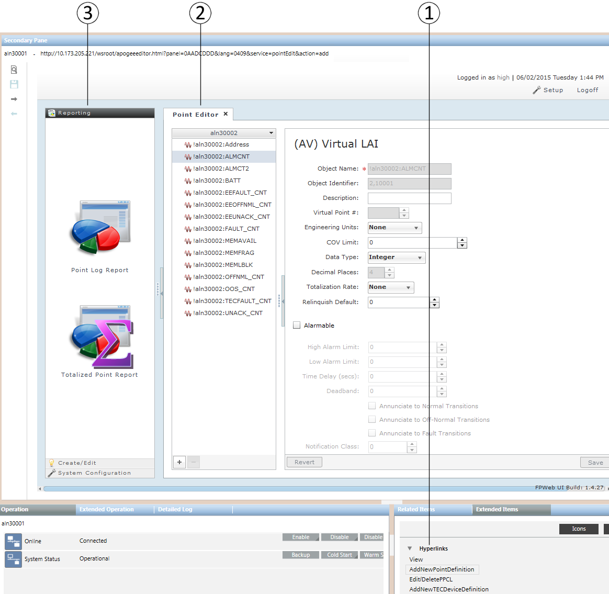

FPWeb UI Workspace
Except for the Subpoint Editor, which is only available through FPWeb UI in Desigo CC, all editors and features of the FPWeb UI are similar to those in the Field Panel Web Server program. For detailed information on using FPWeb UI, see the BACnet Field Panel Web Server User Guide (125-3584).

Item | Description |
1 | Hyperlinks Depending on the type of item selected and if the item is supported by FPWeb UI, the Extended Items tab displays one or more links for the object: NOTE: It is recommended that you install\flash to the latest firmware available to ensure the best system performance and to install the most recent bug fixes.
|
2 | FPWeb UI Displays the FPWeb UI. |
3 | Navigation Pane When you access FPWeb UI by clicking the View hyperlink, the navigation pane is expanded. When opening any editor through the other hyperlinks, the navigation pane is minimized by default. Click the vertical expander on the left side of the editor to expand the navigation pane. |